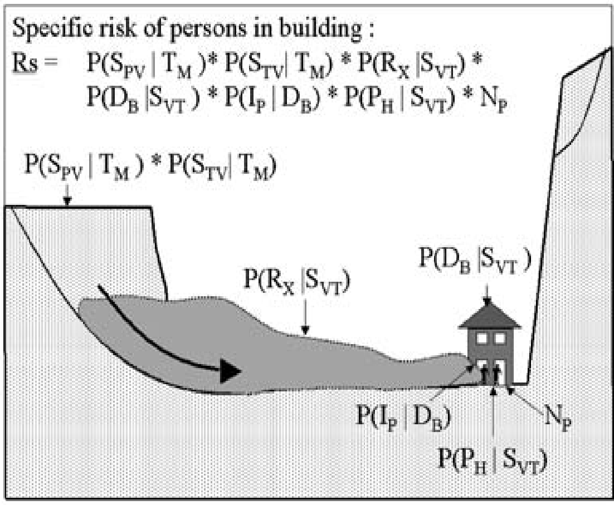

8:10:45
CARTOGRAFÍA GEOTÉCNICA
Validación
Prof. Edier Aristizábal

Fuentes de incertidumbre
Definición
- Exactitud (accuracy): se refiere al grado de qué tan cerca está la medida o valor mapeado o clase de un mapa a su valor verdadero o clase en el campo.
- Error (error):la diferencia entre el valor mapeado o la clase y el valor o clase verdadero.
- Precisión (Precision): referente a una medida como el grado al cual medidas repetidas bajo condiciones invariantes muestran el mismo resultado.
- Incertidumbre (uncertainty): grado con el cual las características actuales del terreno pueden ser presentadas espacialmente en un mapa.
Los términos objetividad y subjetividad son usados para señalar si los diferentes pasos tomados en la determinación de un grado de amenaza son verificables y reproducibles por otro investigador, o si ellos dependen del juicio personal del investigador.
Fuentes de incertidumbre
Dificultades relacionadas con:
- Evaluación con la probabilidad espacial.
- Análisis temporal de la probabilidad.
- Modelamiento de la masa desplazada
- Evaluación de la vulnerabilidad espacial y temporal.

Fuente: van Westen et al. (2006)
La precisión del modelo depende de:
- Precisión posicional: proyección de los mapas, problemas de digitalización, etc.
- Precisión posicional: los mapas representan la información correcta?
- Precisión posicional: los mapas representan la situación actual?
- Escala apropiada: se debe evitar mapas con diferentes escalas.
Desempeño y predicción
La aceptación de un modelos debe responder al menos tres criterios:
- Su adecuación (conceptual y matemáticamente) en describir el comportamiento del sistema
- Su robustez a pequeños cambios de los parámetros de entrada (e.j. sensibilidad a los datos)
- Su exactitud en predecir los datos observados
La evaluación de la predicción de la ocurrencia espacial de deslizamientos debe ser chequeada:
- Contra la información usada para preparar el pronóstico (Success rate). Se refiere a la “bondad del ajuste” del modelo. Qué tan bien el modelo se desempeña?
- Contra el futuro, cuando el evento finalmente ocurra (Prediction rate). Se refiere a la habilidad del modelo para predecir adecuadamente los futuros deslizamientos. Qué tan bien el modelo predice?
Métodos
- Matriz de confusión
- Curva ROC
- Curva de éxito
- Área bajo la curva (AUC)
- Distancia a la clasificación perfecta
- Grado de ajuste
Cross validation
Matriz de confusión


Espacio ROC


Para recordar
- Evalúa la calidad total del modelo
- Se construye a partir de Sensitivity (TP) vs 1-Specificity (FP) a partir de la matriz de confusión creada aplicando diferentes cutoff.
- Mejor desempeño del modelo sobre toda el rango de posibles cutoff. Por lo que es independiente del valor de corte (cutoff).
- Puntos cercanos a la esquina superior derecha corresponden a valores mas bajos de cutoff.
- Una curva ROC es mejor cuando es mas cercana a la esquina superior izquierda.
- sensible a la proporción inicial de positivos y negativos. Para áreas con un grado de amenaza bajo (áreas planas) siempre dará mejores resultados que aplicaciones en áreas con amenaza alta (zonas de montaña), incluso si la calidad de la clasificación es exactamente la misma.